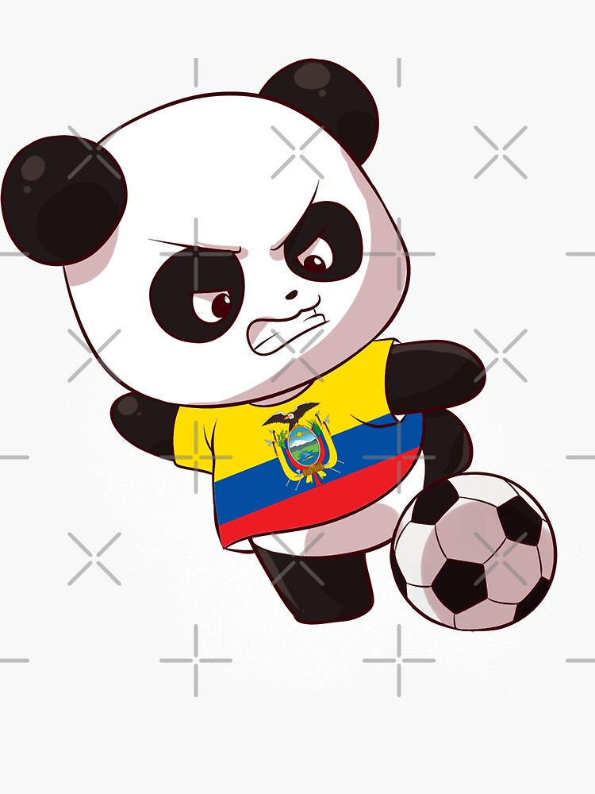

Galería multimedia



Acuakong celebra 500 años de existencia.
18/10/2025
Ecuakong, oficialmente reconocido como el primer simio titánico en el universo 21,galaxia 74 nacido en las faldas del Chimborazo, es una criatura legendaria que combina la fuerza bruta de King Kong con el temperamento impredecible de un taxista guayaquileño en hora pico. Según los archivos secretos del Ministerio de Fauna Descontrolada, Ecuakong emergió durante una erupción emocional causada por una pelea entre dos iguanas celosas. Mide 42 metros de altura, se alimenta exclusivamente de encebollado con ají nivel suicida, y se comunica mediante rugidos que suenan como “ñañitooo”. Su hábitat natural incluye techos de buses interprovinciales y estadios vacíos donde practica su pasatiempo favorito: lanzar semáforos como frisbees. Aunque algunos lo consideran una amenaza, otros lo veneran como el protector de los que cruzan la calle sin mirar. Se rumorea que Toy Chica le tiene miedo, no por su tamaño, sino porque Ecuakong ronca en quichua y duerme abrazado a una bandera del Barcelona SC.